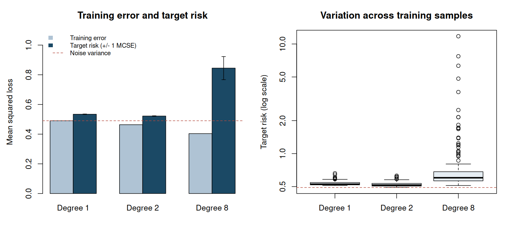

1. Statistical targets and observation mechanisms#
Topics of Statistical Learning · Week 1
The question before the algorithm#
A statistical learning problem starts with a target and an observation model. Before fitting a classifier, ask what will be predicted, for whom it will be predicted, which information is observed, and how errors will be evaluated. These questions become essential when a positive label is recorded selectively, two people supply a comparison instead of a score, or the data determine which hypothesis will be tested.
This chapter establishes notation used throughout the course. By the end, you should be able to distinguish population risk from training error, explain why an independent test sample is useful, identify the sampling unit, and describe information that an observed dataset does not contain.
Population risk and the prediction target#
Let \((X,Y)\sim P\) describe a future observation from the target population. A prediction rule \(g\) maps features to an action or score, and a loss \(\ell(g(X),Y)\) describes its consequence. The population risk is
Both the distribution and the loss are part of the problem. For binary classification, zero–one loss evaluates class decisions. Log loss and Brier loss evaluate probability predictions. For regression, squared error targets a conditional mean; absolute error targets a conditional median. A method that is best for one loss need not be best for another.
For squared error, write \(m(x)=E(Y\mid X=x)\). Conditioning on \(X\) gives
The cross term vanishes because \(E\{Y-m(X)\mid X\}=0\). The first term is prediction error relative to the optimal conditional mean. The second is irreducible under the available features and this loss. Adding a useful feature can change both the target function and the remaining conditional variance.
Worked example 1.1 — A class decision and a probability prediction
Suppose \(P(X=0)=0.6\), \(P(X=1)=0.4\), and
Under equal-cost zero–one loss, the optimal decisions are \(g(0)=0\) and \(g(1)=1\). Their risk is \(0.6(0.2)+0.4(0.2)=0.20\). Always predicting zero has risk \(P(Y=1)=0.44\).
For Brier loss \((q-Y)^2\), the optimal probability scores are instead \(q(0)=0.2\) and \(q(1)=0.8\). Their risk is \(E\{\eta(X)(1-\eta(X))\}=0.16\), where \(\eta(x)=P(Y=1\mid X=x)\). Using the hard class decisions as probability scores gives Brier risk \(0.20\). A good classification rule therefore need not provide the most informative probabilities.
Learning a rule and evaluating it#
Given independent training observations \(D_n=\{(X_i,Y_i)\}_{i=1}^n\), the empirical risk is
An empirical risk minimizer chooses \(\widehat g\in\arg\min_{g\in\mathcal G}\widehat R_n(g)\), possibly with a regularization penalty. A fixed rule’s empirical risk is unbiased for its population risk under the stated sampling model. That statement cannot simply be transferred to a rule selected using those same observations.
For exact empirical risk minimization over a fixed class, assuming the expectations exist,
The first inequality follows by comparing the empirical minimizer with each fixed candidate before taking expectations. It describes average optimism; it does not assert that training error is smaller in every realization.
An independent test sample from \(P\) provides a simpler evaluation statement:
Conditional on training, the fitted rule is fixed and the test observations remain fresh. If the test results are repeatedly used to tune the method, this interpretation changes. A practical experiment separates fitting, tuning, and final assessment, and records which decisions use each sample.
Which population and which sampling unit?#
An observation may be a person, document, prompt, comparison, or time point. Rows need not be independent units. Several ratings of one prompt can share difficulty; several comparisons can share an annotator. Evaluation and resampling should respect the scientific sampling unit and the target of generalization.
A change in the target population also changes risk. A class imbalance is not merely a display choice: it determines how class-specific errors are weighted. Report whether the target is the observed population, a future population, or a deliberately balanced population.
Worked example 1.2 — The same classifier in a different population
A classifier has sensitivity \(0.8\) and specificity \(0.9\). In a population with positive prevalence \(\pi=0.2\), its zero–one risk is
If the prevalence becomes \(0.6\) while the class-conditional feature distributions remain the same, the same classifier has risk \(0.6(0.2)+0.4(0.1)=0.16\). Its balanced error is \(\{0.2+0.1\}/2=0.15\) in either population.
The change does not require the classifier to have deteriorated within either class. It reflects a different target distribution. Under the stated common-class-conditional assumption, source observations could be weighted by \(0.6/0.2=3\) for positives and \(0.4/0.8=0.5\) for negatives to evaluate the new population risk. Without that assumption, these two weights are not sufficient.
Identification, estimation, and guarantees#
A target is identified when the observed-data distribution determines it uniquely within the assumed model. Estimation asks how to recover an identified quantity from finitely many observations. Numerical optimization then asks how well a computational procedure solves the chosen estimation problem. More data or a better optimizer cannot repair a target that the observation model leaves unidentified.
For example, an unlabelled feature distribution alone does not generally determine which observations belong to a scientifically named positive class. PU and UU learning add information through sampling assumptions, class proportions, or selected labels. We will state this information before deriving an empirical objective.
The course also uses several different guarantees:
Question |
Example target or criterion |
|---|---|
How well will a rule predict? |
Population risk or excess risk |
How well does an estimated score recover a parameter? |
Bias, variance, or interval coverage |
How costly were sequential decisions? |
Regret relative to a stated comparator |
Is a selected hypothesis tested validly? |
Type I error under the appropriate selection event |
A low prediction error does not establish a valid selected-hypothesis test. Conversely, a correctly calibrated test need not imply useful prediction. We will keep the target, its assumptions, and the scope of its guarantee together.
R laboratory — Training error and future prediction risk#
The standalone experiment fits polynomials of degrees 1, 2, and 8 to noisy quadratic data. It repeats the entire training procedure and evaluates conditional prediction risk on a fixed, fine midpoint grid. The evaluation uses the known simulation mean and adds the noise variance; it is an approximation to the integral over the specified uniform feature distribution. The true mean is available here only because this is a controlled simulation.
Inspect average training error, target risk, and Monte Carlo standard errors. The quadratic model matches the mean specification; the flexible model may fit noise. The experiment does not claim that one degree is universally optimal.
Code
# Topics of Statistical Learning
# Lab 01: Training error and future prediction risk
# Base R only. Run with: Rscript 01-statistical-targets.R
set.seed(2026102101)
n_train <- 50L
n_rep <- 200L
degrees <- c(1L, 2L, 8L)
noise_sd <- 0.7
mean_function <- function(x) 1 + 2 * x + 0.5 * x^2
evaluation_x <- -1 + (seq_len(801L) - 0.5) * 2 / 801
evaluation_data <- data.frame(x = evaluation_x)
evaluation_mean <- mean_function(evaluation_x)
results <- array(NA_real_, dim = c(n_rep, length(degrees), 2L),
dimnames = list(NULL, paste0("degree_", degrees),
c("training_MSE", "target_risk")))
for (b in seq_len(n_rep)) {
training <- data.frame(x = runif(n_train, -1, 1))
training$y <- mean_function(training$x) + rnorm(n_train, sd = noise_sd)
for (j in seq_along(degrees)) {
degree <- degrees[j]
fit <- lm(y ~ poly(x, degree = degree), data = training)
train_prediction <- fitted(fit)
test_prediction <- predict(fit, newdata = evaluation_data)
results[b, j, "training_MSE"] <- mean((training$y - train_prediction)^2)
# Midpoint approximation to E_X[(g_hat(X) - m(X))^2] + sigma^2.
results[b, j, "target_risk"] <-
mean((test_prediction - evaluation_mean)^2) + noise_sd^2
}
}
summary_table <- do.call(rbind, lapply(seq_along(degrees), function(j) {
train <- results[, j, "training_MSE"]
risk <- results[, j, "target_risk"]
difference <- risk - train
data.frame(degree = degrees[j], mean_training_MSE = mean(train),
mean_target_risk = mean(risk), risk_MCSE = sd(risk) / sqrt(n_rep),
mean_optimism = mean(difference),
optimism_MCSE = sd(difference) / sqrt(n_rep))
}))
cat("Independent training replications:", n_rep, "\n")
cat("Training observations per replication:", n_train, "\n")
cat("Irreducible variance:", noise_sd^2, "\n")
cat("Target: X uniform on [-1, 1]; squared prediction error.\n\n")
print(summary_table, digits = 5, row.names = FALSE)
cat("\nTarget risks use the known simulation mean and a midpoint integration grid.\n")
cat("MCSE describes uncertainty across repeated training datasets.\n")
cat("It is not a confidence interval for an individual fitted model's risk.\n")
figure_dir <- Sys.getenv("COURSE_FIGURE_DIR", unset = "")
if (nzchar(figure_dir)) {
dir.create(figure_dir, recursive = TRUE, showWarnings = FALSE)
png(file.path(figure_dir, "01-statistical-targets.png"), width = 1500,
height = 700, res = 140, type = "cairo")
par(mfrow = c(1, 2), mar = c(4.5, 4.5, 3.2, 1.2))
means <- rbind(summary_table$mean_training_MSE, summary_table$mean_target_risk)
positions <- barplot(means, beside = TRUE, col = c("#AFC3D4", "#1B4965"),
names.arg = paste("Degree", degrees), ylim = c(0, 1.1),
ylab = "Mean squared loss", main = "Training error and target risk")
arrows(positions[2, ], summary_table$mean_target_risk - summary_table$risk_MCSE,
positions[2, ], summary_table$mean_target_risk + summary_table$risk_MCSE,
angle = 90, code = 3, length = 0.04)
abline(h = noise_sd^2, lty = 2, col = "#B44A3D")
legend("topleft", c("Training error", "Target risk (+/- 1 MCSE)", "Noise variance"),
fill = c("#AFC3D4", "#1B4965", NA), border = NA,
lty = c(NA, NA, 2), col = c(NA, NA, "#B44A3D"), bty = "n", cex = 0.8)
boxplot(lapply(seq_along(degrees), function(j) results[, j, "target_risk"]),
names = paste("Degree", degrees), log = "y", col = "#E5EDF3",
ylab = "Target risk (log scale)", main = "Variation across training samples")
abline(h = noise_sd^2, lty = 2, col = "#B44A3D")
invisible(dev.off())
}
stopifnot(all(is.finite(results)),
all(results[, , "target_risk"] >= noise_sd^2 - 1e-12))
Executed laboratory output#
Output
Independent training replications: 200
Training observations per replication: 50
Irreducible variance: 0.49
Target: X uniform on [-1, 1]; squared prediction error.
degree mean_training_MSE mean_target_risk risk_MCSE mean_optimism
1 0.48989 0.53407 0.0016039 0.044178
2 0.46359 0.52189 0.0016984 0.058303
8 0.40349 0.84472 0.0778877 0.441230
optimism_MCSE
0.0073334
0.0070737
0.0780512
Target risks use the known simulation mean and a midpoint integration grid.
MCSE describes uncertainty across repeated training datasets.
It is not a confidence interval for an individual fitted model's risk.


Exercises#
Suppose a false positive costs \(c_{\mathrm{FP}}\) and a false negative costs \(c_{\mathrm{FN}}\), both positive. Derive the optimal decision threshold for \(\eta(x)=P(Y=1\mid X=x)\).
Explain why the test-risk equality above can fail when several candidate models are compared using the test sample and the best-looking one is reported.
Modify the laboratory to increase the training sample size. Which parts of the squared-error decomposition should change? Which part should not?
Each of 100 prompts has 20 ratings. What additional information is needed before treating 2,000 rows as 2,000 independent observations for uncertainty assessment?
Worked solutions
1. Predicting one has conditional expected loss \(c_{\mathrm{FP}}(1-\eta)\), while predicting zero has loss \(c_{\mathrm{FN}}\eta\). Predict one when \(\eta>c_{\mathrm{FP}}/(c_{\mathrm{FP}}+c_{\mathrm{FN}})\); either decision is optimal at equality.
2. The selected model now depends on test outcomes. Conditioning only on the original training data no longer makes the reported rule independent of the test sample. A separate final sample, or an evaluation procedure that accounts for this selection, is needed for the original interpretation.
3. More training observations can reduce error in estimating the mean function. They do not change the data-generating conditional variance. A misspecified linear model retains approximation error even with arbitrarily many observations; the experiment’s irreducible variance remains \(0.7^2\).
4. We need the dependence structure, how annotators are shared, and whether the target is a new rating, prompt, annotator, or some combination. Prompt-level dependence can invalidate row-wise uncertainty estimates; crossed prompt–annotator dependence may require more than a one-way resampling scheme.
Primary readings#
Shalev-Shwartz and Ben-David, Understanding Machine Learning: From Theory to Algorithms: selected sections on learning models, empirical risk, and generalization.
Bartlett, Jordan, and McAuliffe (2006), “Convexity, Classification, and Risk Bounds”: an advanced connection between surrogate losses and classification risk.
Next: Chapter 2 makes the observation mechanism explicit when a recorded label is incomplete, ambiguous, or corrupted.